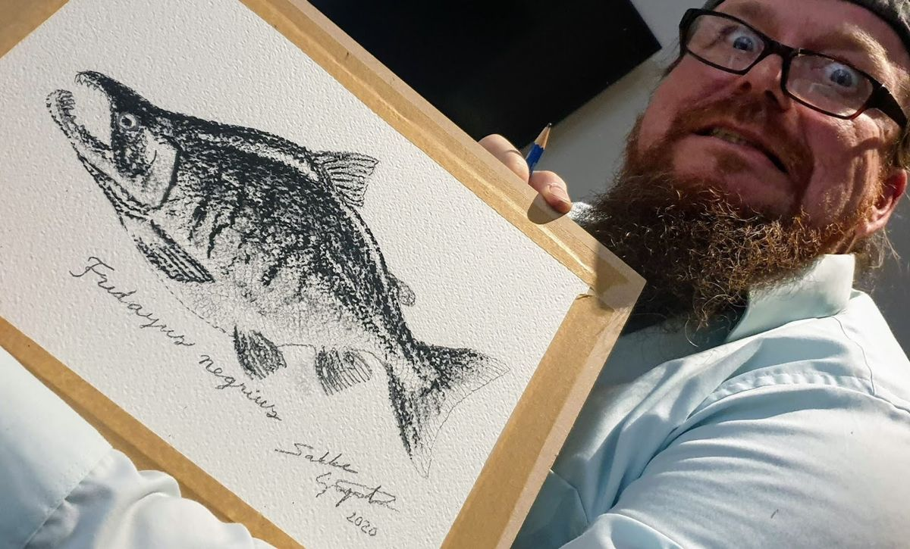
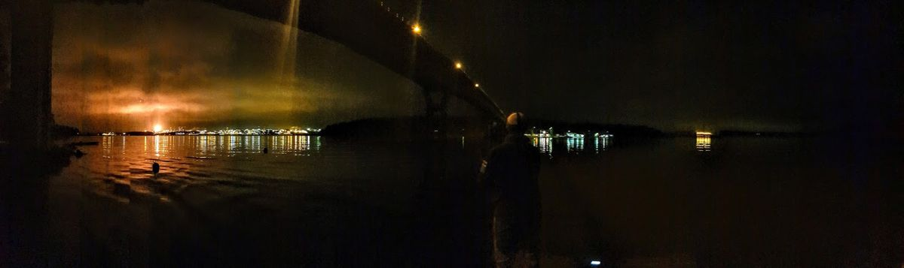
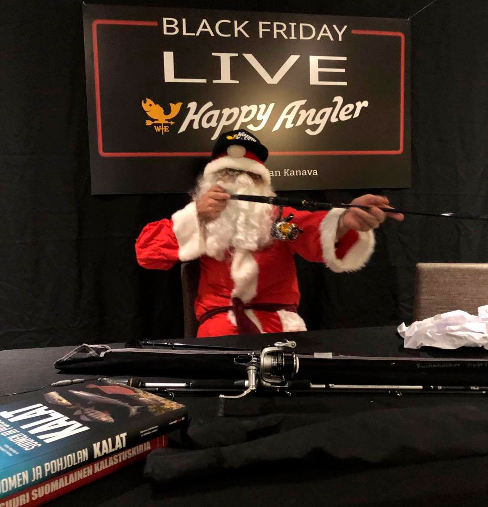

Blogitekstit · Marraskuu 2020
Marraskuu - pimeä saapuu jo varhain


Kalenteria kun katsoo on viikonloppuja vapaana Marraskuussa vain yksi. Muille viikonlopuille on syntymäpäiväbileitä sekä parisuhdeviikonloppu - laatuaikaa rakkaan vaimon kanssa.
Silmissä siintää heti alkukuulle kilohailista elämänpiste ja lajipiste nro. 58 kuluvalle vuodelle. Tuo piste voisi olla listan viimeinen ja samalla elämänpisteissä pääsisin Juuson kanssa maagiseen 60 elikseen.
Kuukauden ainoa kalareissu suuntautui pääkaupunkiseudun silakkapaikoille Aten kanssa. Toiveissa oli, että silakoiden sijaan itämeren dioksidipommien seasta löytyisi elämänpsite nro. 6 kuluvalle vuodelle ja pääsisin silittämään vastakarvaan kilohailin vatsan tankasuomuja. Silakkaa nousi Aten lounastarpeiksi, mutta kilohailia ei.


Uudenmaan koronatilanne räjähti käsiin, itselläni pientä flunssaa ja muukin perhe pienessä räkiksessä. Utön Facebook-ryhmässä nostettiin esille saaristolaisten tilanne ja muualta tulevien riski tuoda korona-virus mukanaan. Tämä sai kallistumaan päätökseen, etten lähde kalaretkelle Utöhön.


Suomen suurin kalastajien Black Friday duunissa Happyangler.fi ja muiden maiden kaupoissa Happyangler.ru, Happyangler.se, Happyangler.com materiaalien koodaminen vei keskittyminen duuneihin ja kalastus jäi loppu kuukaudesta totaalisesti.
Uutta tietoa kuukausi toi kuitenkin piikkisimpun, kilohailin ja tuulenkalojen osalta. Ehkä joulukuussa sitten...
31 päivää jäljellä, marraskuusta kalalajien osalta jäi mieleen tämä Happy Angler Black Friday Livessä Sakke Yrjölän piirtämä Friday negrius. Teos arvottiin livelähetyksessä ja voittaja sai kyllä ainutlaatuisen piirroksen.
Seuraa ennätyksen etenemistä
Pidän kirjaa lajilistasta ja tarkemmasta retkidatasta Google -taulukossa, joka löytyy jokaisesta ennätysyrityksen postauksesta.
Tästä linkistä taulukko avautuu uuteen ikkunaan.
Seurantatilanne löytyy myös blogini oikeasta yläreunasta.
Vuoden aikana ennätysyrityksessä kulkee mukaan myös tämä kalataitelija-graaffikko Sakke Yrjölän suunnittelema SPECIES FIN 53 -merkki.
Paitakulmassa painatin pipoon ja lippikseen saman merkin. Tavoitteeni on saada aikaiseksi 53 saaliskuvaa tekstin alussa tekemääni taulukkoon joissa kaikissa kuvissa näkyisi tuo kyseinen tunnus.
Paitakulma on Suomalainen perheyritys, joka haluaa panostaa laatuun ja asiakastyytyväisyyteen. Tutustu yrityksen palveluihin tästä.